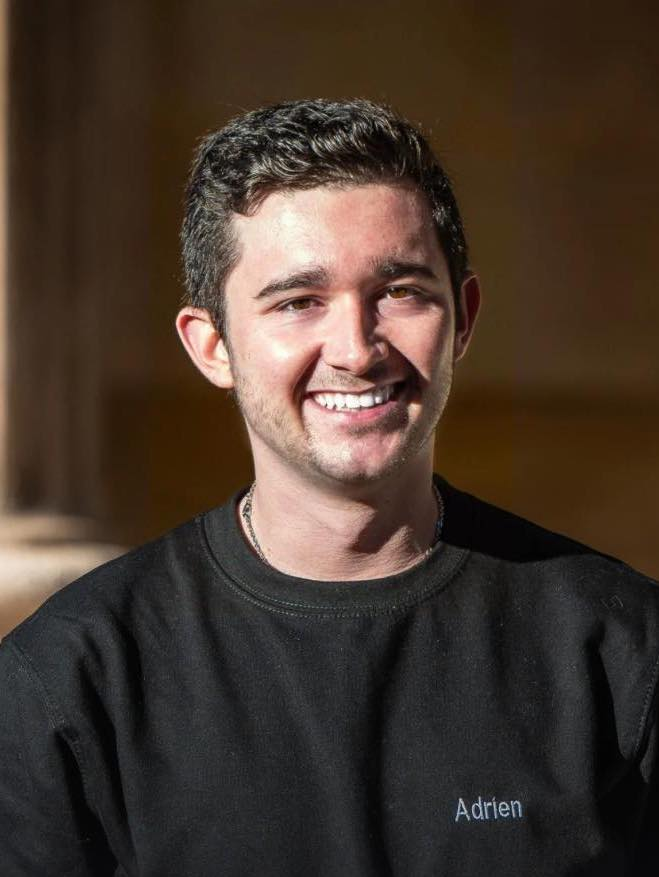

Adrien PUJANTE
Né le 07/07/2001
Véhiculé
À propos
Actuellement en première année de master (M1) du Programme Grande École de Kedge BS, mon projet professionnel est de m'orienter vers le marketing digital ou l'événementiel, et en particulier dans l'industrie de la musique.
C'est lors de mes différentes expériences associatives et professionnelles que j'ai pu acquérir de nombreuses compétences.
Je suis actuellement à la recherche d'un stage de 6 mois dans l'industrie de la musique, au sein d'un label, d'une agence de management, de publishing, de booking et/ou d'événementiel à partir de janvier 2023, afin de peaufiner mon orientation professionnelle et d'acquérir une connaissance plus accrue de ce secteur.
Formation

KEDGE BUSINESS SCHOOL
2021-2025
Master Marketing Digital Programme Grande École (PGE)
CPGE ECE Lycée Ampère Lyon (69)
2019-2021
Lycée I. Dauphin Cavaillon (84)
2016-2019
Baccalauréat Économique et Social (ES), Mention TB / Section Sport-étude Athlétisme et Option Théâtre.
Expériences

Président / Association Le Phare Musical
Avril 2020 - présent
Webzine de promotion d’artistes émergents sur lepharemusical.fr et sur les réseaux sociaux, et création d'évènements culturels musicaux.
- Création et gestion administrative de l'asso.
- Management d'une équipe de 5 bénévoles.
- Responsable Promotion et Relations Artistes.
- Gestion des playlists.
- Développement des partenariats.
- Création d'événements musicaux.
Responsable Communication / Projet Hand in Hand
Octobre 2021 - présent
Projet humanitaire de l’association Unis Terre à Kedge BS qui a pour but de sensibiliser au handicap.
- Création de contenu photo & vidéo.
- Gestion des réseaux sociaux.
- Analyse des statistiques.
- Élaboration de plans de communication.
Membre des pôles Production et Digital / Mars'eyes Communication
Octobre 2021 - présent
MARS'EYES est l'agence de communication junior de Kedge BS Marseille.
- Création de contenu audiovisuel et communication digitale de la junior entreprise de communication.
Coach des PISTARDS / Équipe d'athlétisme de Kedge BS
Octobre 2021 - présent
- Encadrement de 20 athlètes.
- Gestion des réseaux sociaux et de l'image de l'équipe.
- Développement de la structure.
Assistant du développement commercial / KEDGE BUSINESS SCHOOL
Avril 2022 - Juillet 2022
Responsable Accueil Phoning - Team Admissibles 2022
Responsable de l'accueil de 4500 admissibles :
- Management d'une équipe de 15 personnes
- Planification des journées de travail
- Gestion des imprévus
Missions du pôle :
- Accueil et émargement des admissibles
- Gestion de la hotline
- Phoning et mailing en amont des journées
- Gestion du check-out
- Aider et orienter les candidats
Animateur en centre de loisir / Œuvre des Colonies de Vacances (OCV)
Juillet 2019
- Responsable d'un groupe de 25 enfants de 6/7 ans.
- Développement et création d'activités culturelles et sportives à destination des enfants, conformément au projet pédagogique de la structure.
Autres compétences
Langues :
- Français (langue maternelle)
- Anglais (B2-C1)
- Italien (B1)
Brevets :
- BAFA
- PSC 1
Autres :
Coordonnées
Adresse
204 Rue Breteuil, 13006 Marseille
Numéro de téléphone
06 28 02 31 35